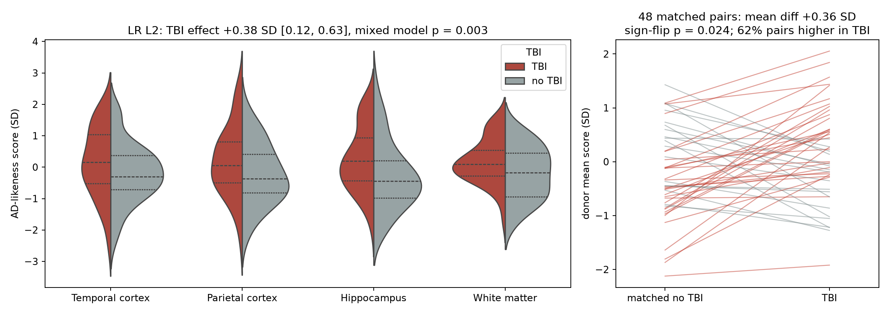
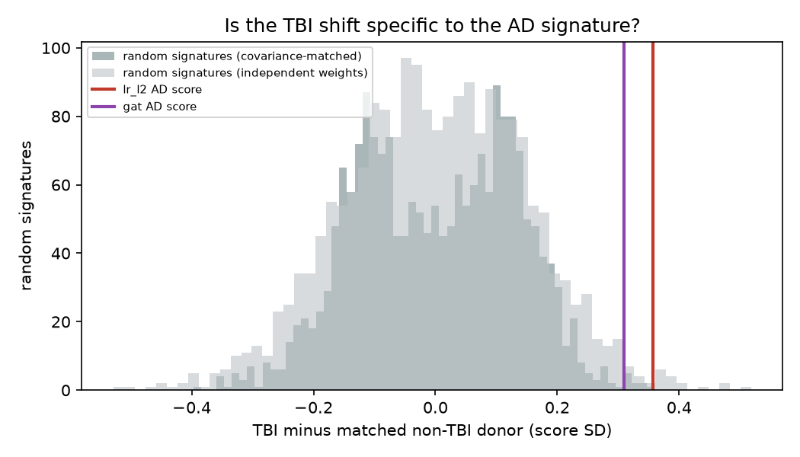
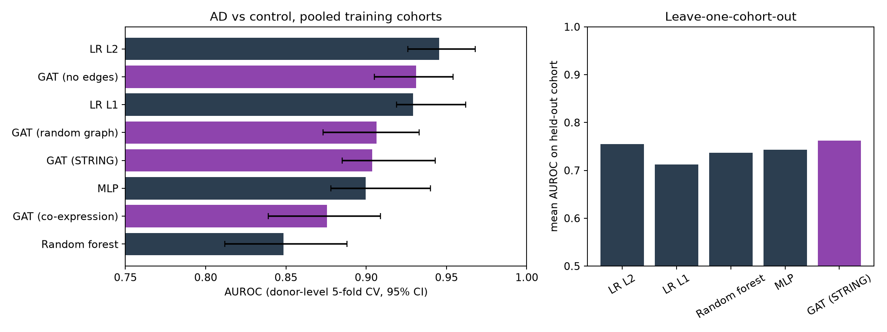
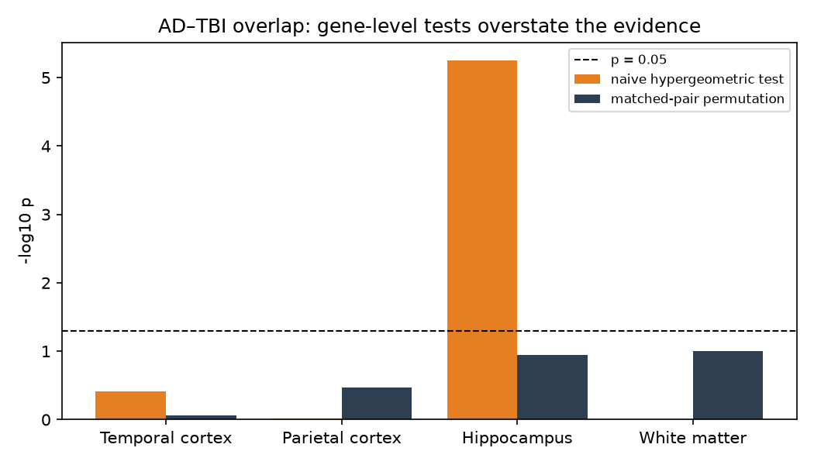
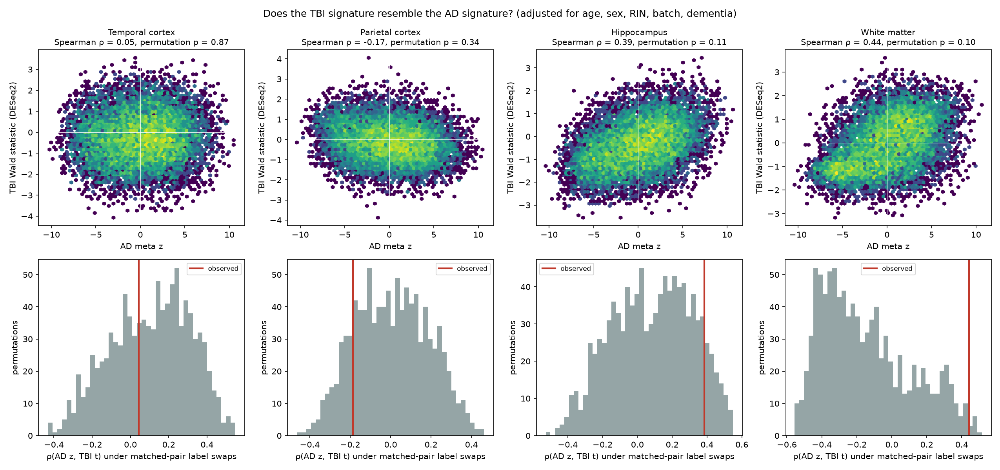
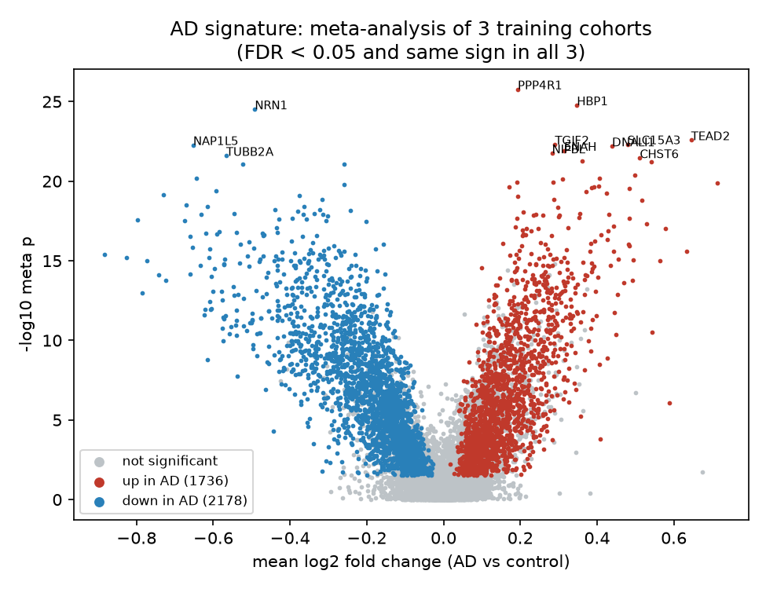
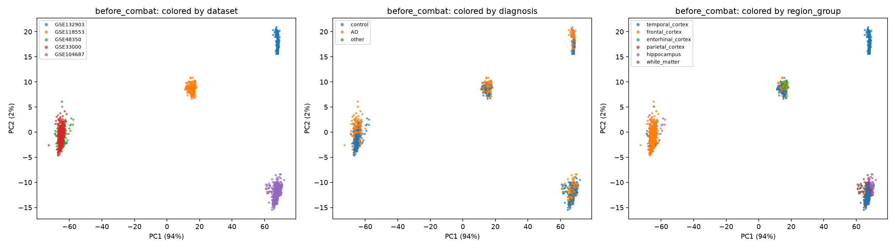
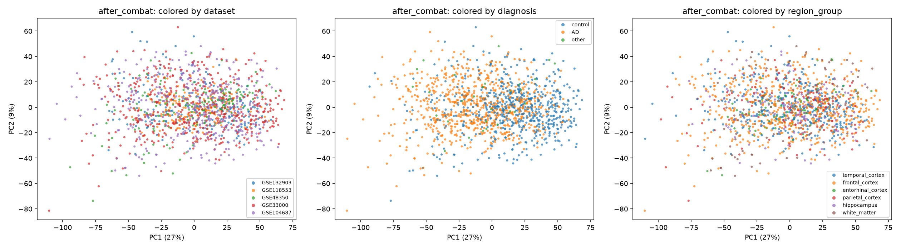
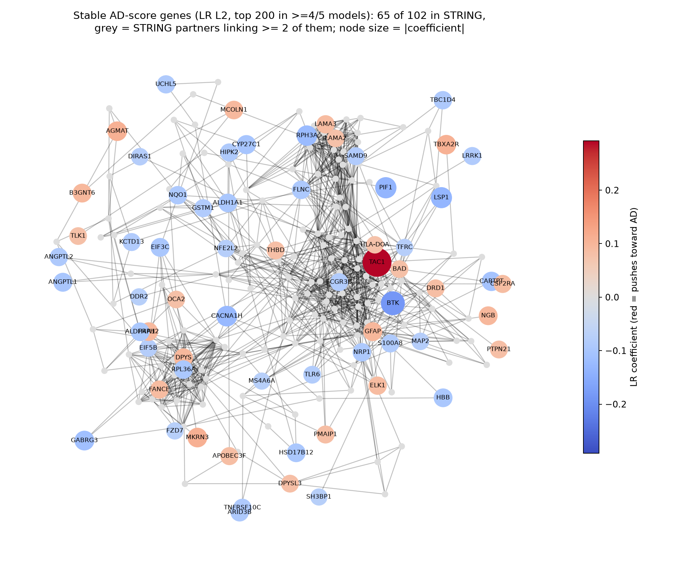

Short answer: slightly, and specifically in the Alzheimer direction.
Donors with a past TBI with loss of consciousness score modestly higher on the Alzheimer signature than their matched partners without TBI. The shift is specific to the Alzheimer direction, but small, and it is not carried by any single gene. A graph neural network did not beat a linear model.
All results are statistical associations in post-mortem tissue. They do not show that TBI causes Alzheimer's disease and have no clinical use.
Score explorer
Each dot is one brain sample. Scores are in standard-deviation units across the Allen cohort; higher means more Alzheimer-like expression. Select a dot, or pick a sample from the list.
Gene neighbourhoods
The 102 genes whose weights are stable across the five final logistic-regression models, with their high-confidence STRING partners. Colour shows how the gene changes in Alzheimer's (meta-analysis z); size shows its weight in the score.
What we found
- A robust Alzheimer signature. genes change consistently across three training cohorts; of them move the same way in a fourth, held-out cohort. Neuronal, synaptic and mitochondrial genes go down; vascular, TGF-β and innate-immune genes go up.
- No single TBI gene. In every brain region, no gene is significantly associated with TBI. Gene-by-gene overlap tests with Alzheimer's look highly significant in hippocampus, but collapse once donors, not genes, are permuted (all regions p = ): correlated genes make naive tests overconfident.
- A modest, Alzheimer-specific shift per sample. TBI donors score SD higher than their matched partners (exact sign-flip p = ; mixed model adjusted for age, sex, dementia, RNA quality and region: SD, p = ), with a dose trend. The shift exceeds % of random gene signatures. It does not survive correction across the five models, and it weakens in non-demented donors alone.
- The graph did not help. Logistic regression reached AUROC , the GAT on the STRING network . The same GAT on a degree-preserving random graph scored , and with no edges . On an unseen cohort every model drops to about 0.75.
- Diffuse drivers. No gene and no pathway or cell-type set carries the TBI shift on its own. GAT explanations were unstable across models and its attention just followed node degree, so interpretation uses the linear model.
Figures
Figure labels are in English.


















Data and method
| Role | Dataset | Tissue | Donors |
|---|---|---|---|
| Train | GSE132903 | Temporal cortex | 195 |
| Train | GSE118553 | Temporal, entorhinal, frontal | 78 |
| Train | GSE48350 | Hippocampus and 3 cortices | 63 |
| External test | GSE33000 | Prefrontal cortex | 467 |
| TBI cohort | GSE104687 (Allen) | 4 regions, RNA-seq | 106 |
- Map four platforms to genes; correct batch effects with ComBat without using labels.
- Classical biology: Alzheimer meta-analysis, DESeq2 for TBI per region, permutation-based overlap tests.
- Gene graph: STRING v12 high-confidence edges over 4,000 selected genes.
- Models: GAT with a per-gene readout vs logistic regression, random forest and MLP, cross-validated by donor.
- Transfer: score the Allen samples; test TBI with mixed models, matched pairs, random-signature controls.
Limitations
- Small TBI cohort: 106 donors and 48 complete matched pairs; 0.3 SD effects are near the detection limit.
- TBI is self-reported, with loss of consciousness, often decades before death; no severity data.
- Bulk post-mortem tissue: cell-composition shifts and per-cell regulation cannot be separated.
- Four platforms and batch correction; performance falls to about 0.75 AUROC on an unseen cohort.
- Several models and regions were tested; the main effect does not survive Bonferroni correction.
- Association only. No causal or clinical claims.